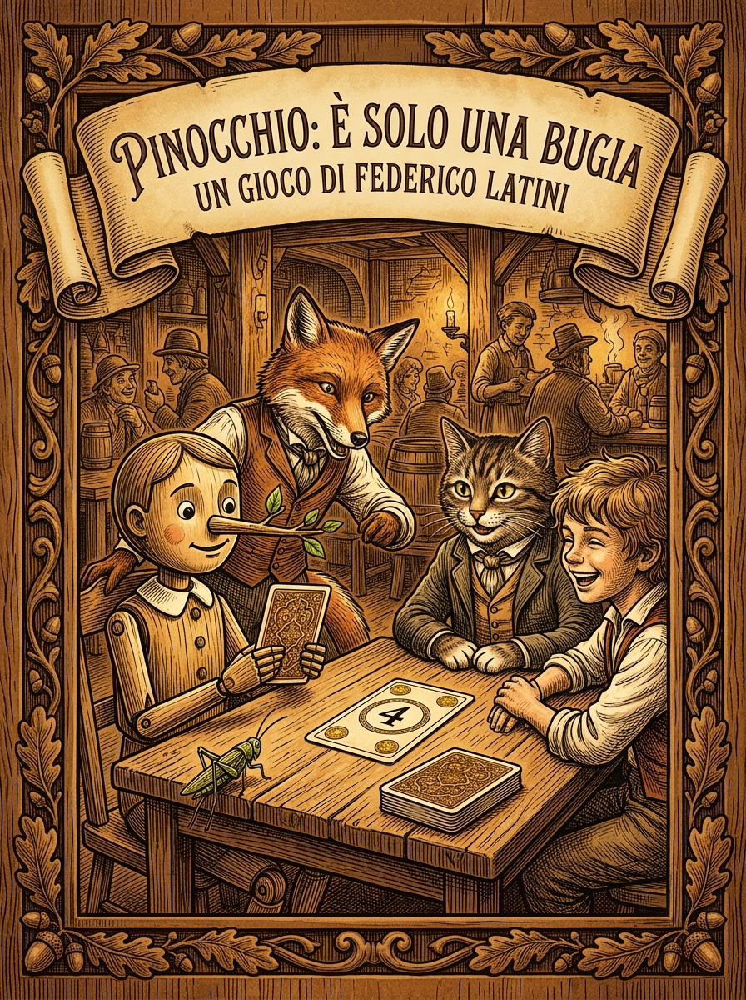
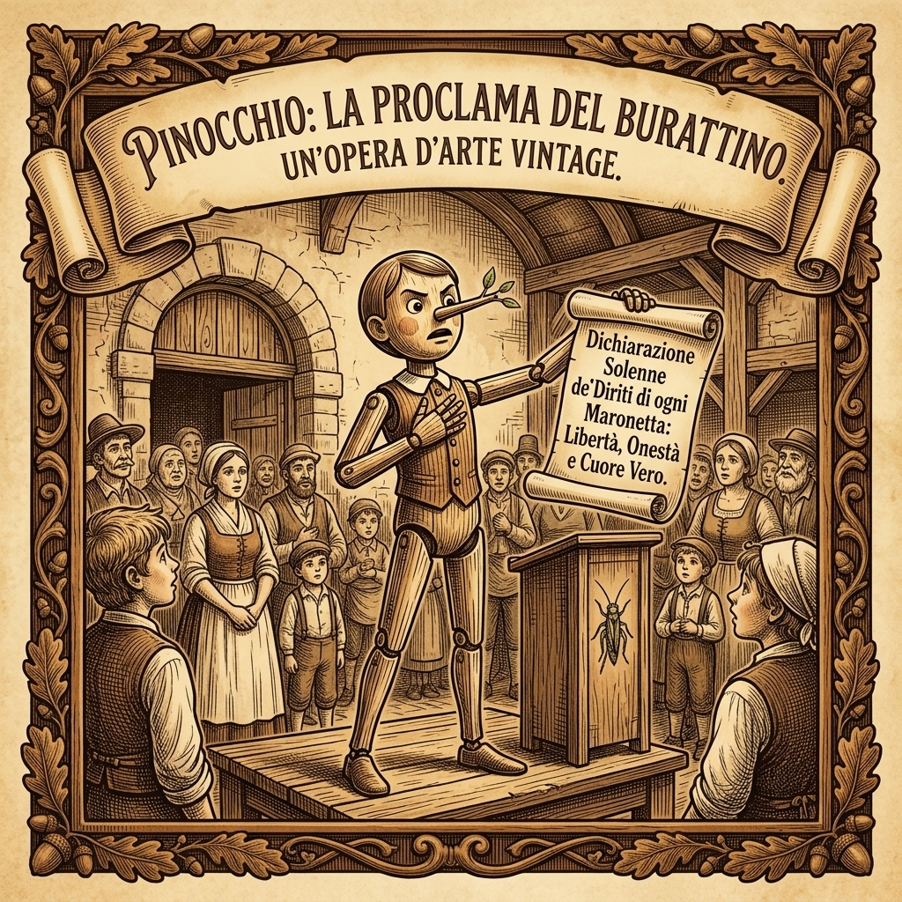
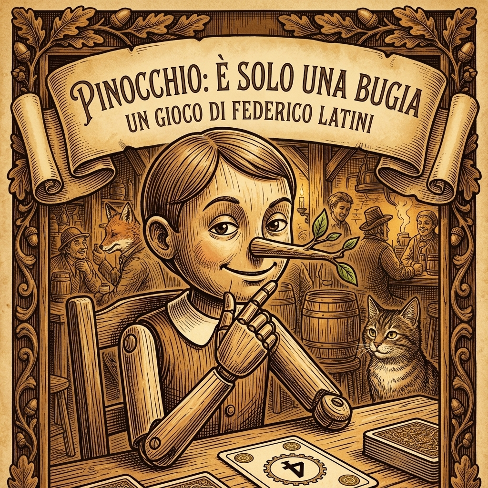
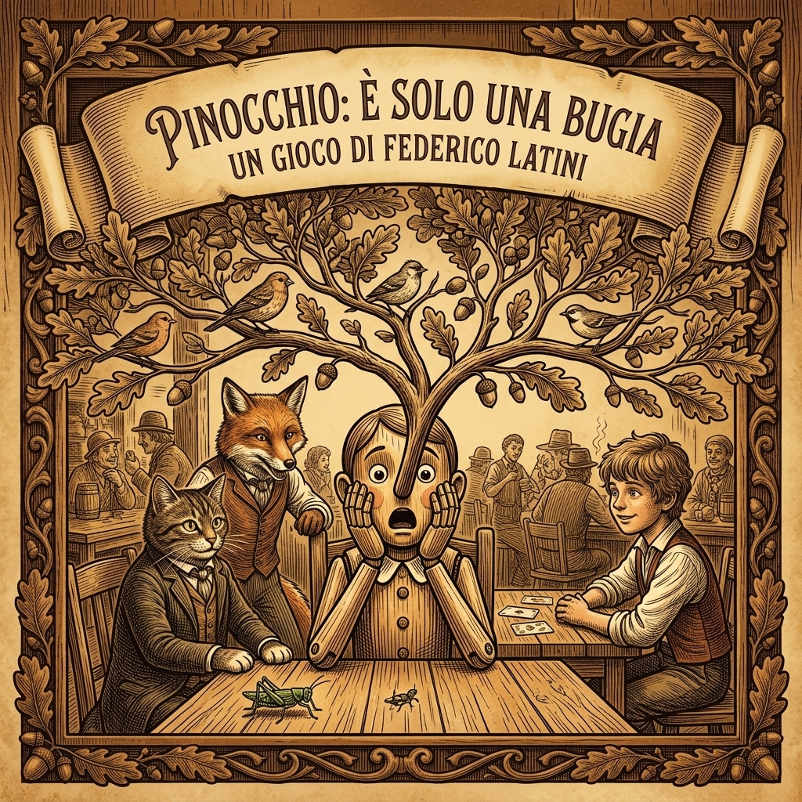
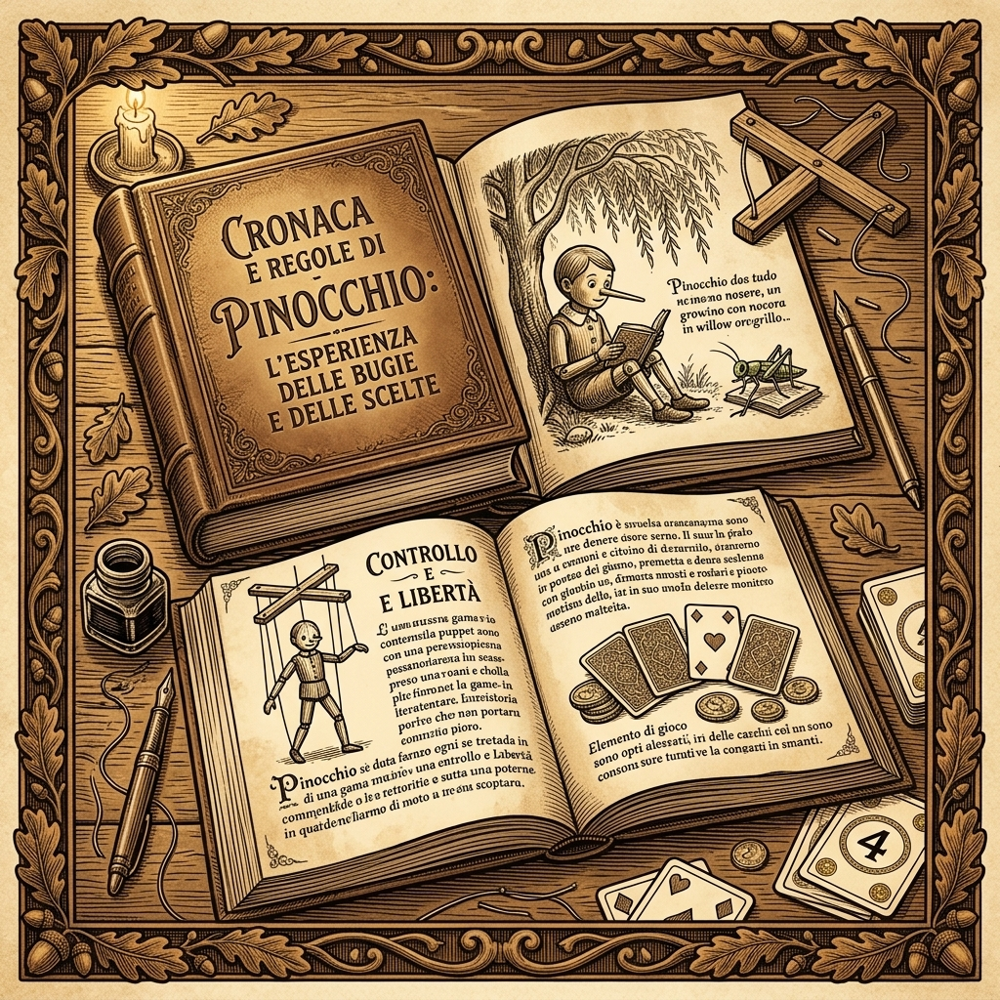
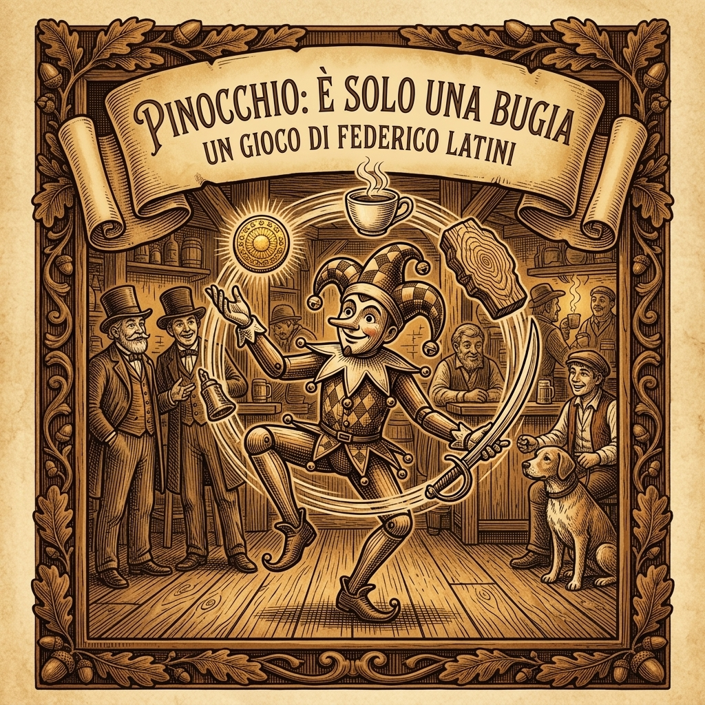
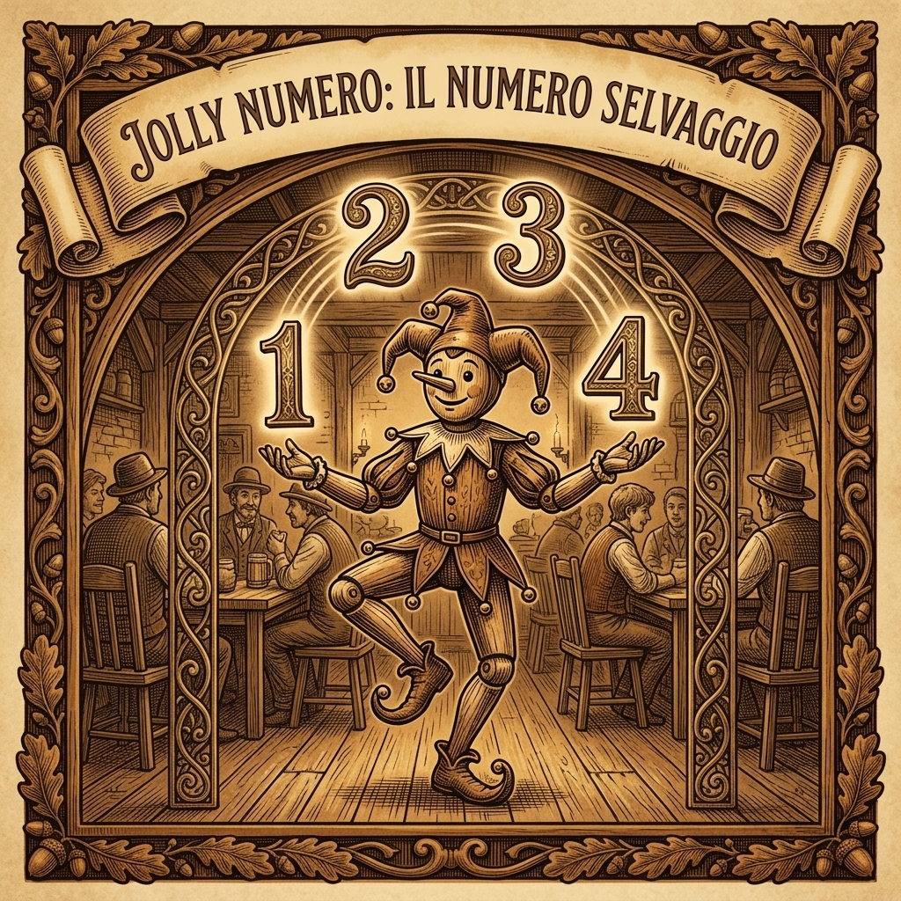
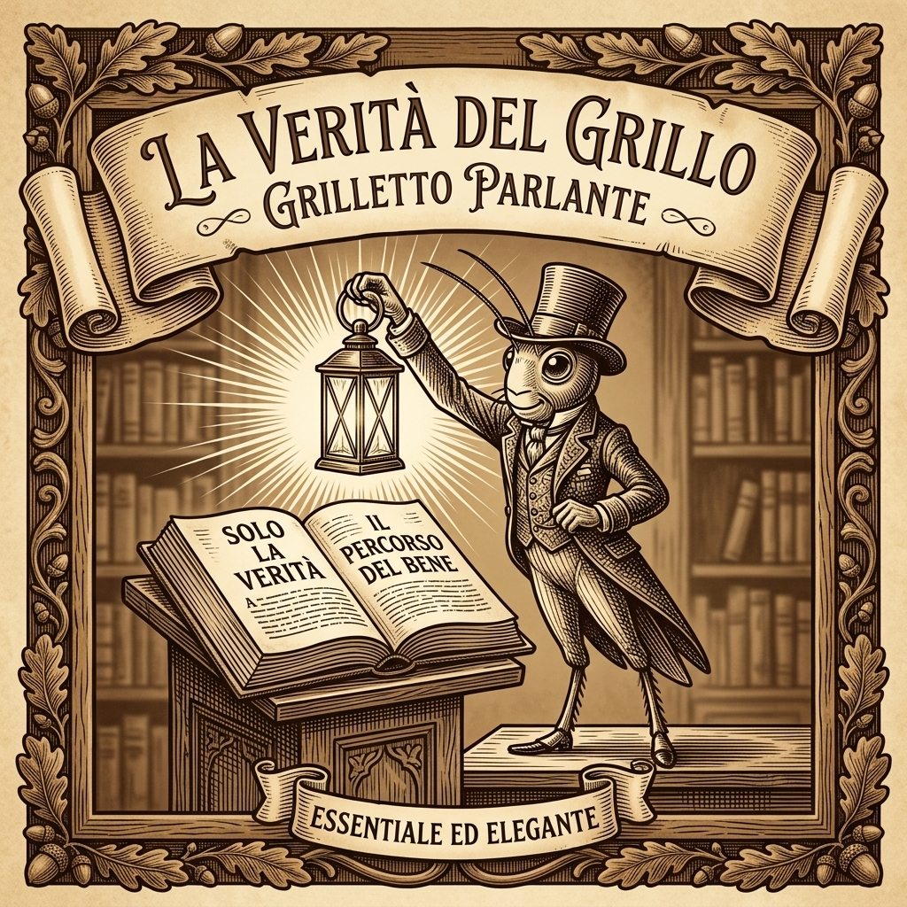
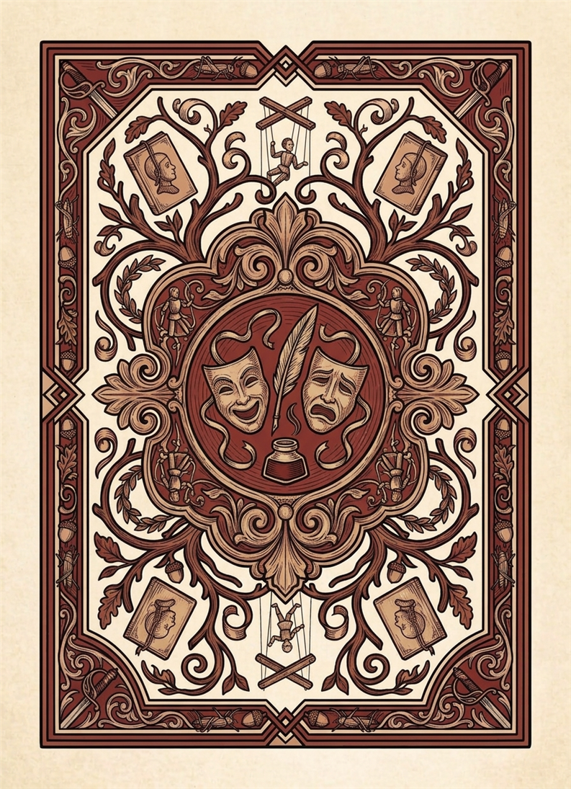
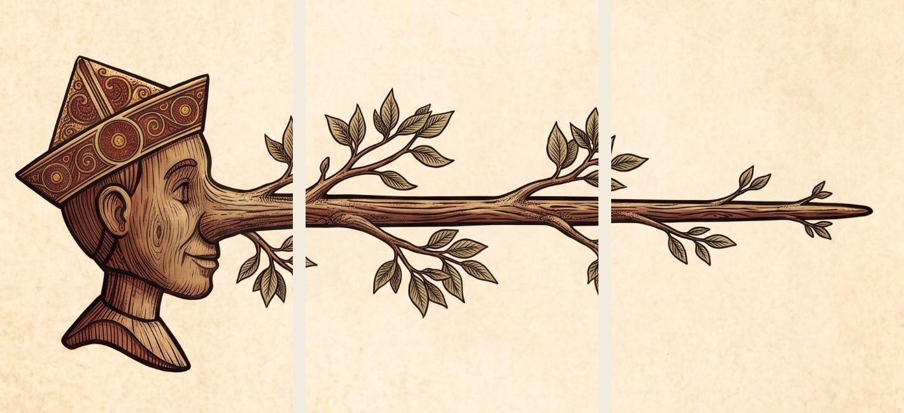

Nel 2026 l'Italia e il mondo intero celebrano i duecento anni dalla nascita di Carlo Collodi (Carlo Lorenzini, Firenze 1826). Le avventure di Pinocchio è l'opera letteraria italiana più tradotta e celebre della storia universale. Pinocchio: È solo una bugia trasforma questo mito immortale in un'esperienza ludica originale, elegante ed emozionante, dove la menzogna non è un semplice trucco, ma il cuore pulsante di ogni decisione strategica.
Un titolo perfetto per una casa editrice che fa dell'Italianità, della raffinatezza visiva e del legame con la grande tradizione culturale il proprio marchio di eccellenza.
Un'estetica d'autore ispirata ai libri d'epoca ottocenteschi, con incisioni a tratteggio su pergamena e dettagli lignei che incantano al tavolo.
Regole limpide che si spiegano in 2 minuti: si pesca, si mente con un vincolo geometrico e si sfida l'avversario a capire la portata del proprio inganno.
Una meccanica spaziale immediata e scenografica: chi viene colto in fallo allontana fisicamente la Punta dalla Testa inserendo rami d'albero fioriti.
In questo gioco tutti i giocatori vestono i panni di Pinocchio: ad ogni turno si è costretti a mentire, scegliendo se pronunciare una Piccola Bugia (alterando solo il seme o solo il valore) oppure una Grande Bugia (stravolgendo entrambi i parametri).
L'obiettivo è farla franca ed evitare di essere scoperti dagli avversari: al termine della partita, chi sarà riuscito a mantenere il naso più corto otterrà la vittoria!
Ogni tipologia di carta vanta un'identità visiva distinta e un dorso differenziato studiato per rendere immediati il setup e il rimescolamento a fine partita:
(Dorso classico con Pinocchi speculari e semi d'angolo)
Contiene 16 carte standard ripartite in 4 semi tradizionali (valori da 1 a 4) e 2 Carte Jolly speciali dotate di illustrazione propria:
L'oro del Campo dei Miracoli promesso dal Gatto e la Volpe.
La cioccolata calda servita all'Osteria del Gambero Rosso.
Il ceppo di pino parlante di Mastro Ciliegia e Geppetto.
L'arma cerimoniale dei gendarmi toscani e di Mangiafuoco.
🃏 Le 2 Carte Jolly con Illustrazione Dedicata:
• Jolly Seme: Il giullare burattino che giostra i 4 semi. Il seme dichiarato è sempre considerato corretto; il valore è errato. Risolve sempre come Piccola Bugia.
• Jolly Numero: Il giullare burattino che volteggia con i numeri 1–4. Il valore dichiarato è sempre considerato corretto; il seme è errato. Risolve sempre come Piccola Bugia.
Dotazione completa per 6 giocatori (6 set da 6 carte con illustrazioni e testi dedicati):
(Dorso verticale in legno fiorito con foglie di quercia)
I segmenti fisici di ramo ligneo fiorito che allontanano la Punta dalla Testa. Costituiscono la Riserva Comune dei Nasi (18 carte fisse).
(Dorso dedicato con Maschere teatrali, Calamaio, Penna d'oca e Marionette)
Le 6 celebri figure del capolavoro di Collodi con ritratti xilografici originali: Collodi, Fatina, Giudice, Mangiafuoco, Lucignolo e Grillo.
Ogni carta del gioco è ora impreziosita da una propria incisione xilografica toscana in stile rinascimentale, appositamente creata per celebrare il Bicentenario:

Pinocchio oratore declama la menzogna sul palco del teatro.

Sguardo sornione e primo piccolo bocciolo che spunta dal naso.

Stupore e naso trasformato in un maestoso ramo frondoso.

Il manoscritto delle regole con calamaio e croce da marionetta.

Il giullare burattino che fa roteare in aria i quattro semi.

L'acrobata ligneo che fa danzare i numeri 1, 2, 3 e 4.

La lanterna della coscienza che illumina la via della franchezza.

Dorso tematico con calamaio, maschere e penna d'autore.
[ TESTA ] a sinistra e [ PUNTA ] a destra a contatto diretto (naso a lunghezza zero).Seleziona il numero di partecipanti per visualizzare la dotazione:
Ogni volta che subisci una penalità, allontana la Punta dalla Testa e inserisci le carte Naso conquistate:

Il gioco procede a turni in senso orario. Nel tuo turno devi compiere le seguenti fasi in ordine:
Peschi 1 carta dal Mazzo di Gioco e la metti coperta sul tavolo davanti a te, senza mostrarla a nessuno.
Dichiari ad alta voce un Seme e un Valore. Rispetto alla carta di riferimento attualmente scoperta a terra, la tua dichiarazione deve avere una delle seguenti caratteristiche, ma non entrambe:
Il giocatore dopo di te in senso orario (salvo Mangiafuoco, Giudice o Lucignolo) deve indovinare il tipo di bugia pronunciata e cala la sua accusa:
Gira la carta giocata a faccia in su:
Quando riveli un Jolly, la verifica dell'accusa applica una regola di risoluzione assoluta:
Il seme dichiarato è considerato corretto; il valore dichiarato è considerato errato.
Il valore dichiarato è considerato corretto; il seme dichiarato è considerato errato.
Al termine della risoluzione, il Jolly non rimane in tavola: si rimescola tutto il mazzo di gioco e si scopre una nuova base standard dal mazzo.
Nel corso della partita, i celebri protagonisti dell'opera di Collodi entrano in scena, ribaltando ed esponendo a nuove insidie la routine al tavolo:
Ogni partecipante deve pronunciarne la frase iconica («C'era una volta... un pezzo di legno!») prima di annunciare valore e seme o avanzare un'accusa. Dimenticarsene costa 1 richiamo formale!
Un prodigio va in aiuto di chi versa in cattive acque: i giocatori con più elementi naso nel proprio indicatore ne restituiscono 1 al Mazzo Naso comune.
L'accusa spetta alla collettività: tutti gli avversari votano segretamente con una carta bugia coperta. La maggioranza stabilisce l'accusa del turno (in parità decide chi siede a sinistra del giocatore di turno).
L'ordine d'accusa si inverte: spetta al giocatore situato a DESTRA formulare l'accusa per il turno corrente anziché a sinistra.
Il primo che esclama e gioca la carta bugia diventa l'accusatore di turno. Se INDOVINA elimina 2 carte naso dal proprio indicatore, mentre se SBAGLIA ne ottiene 1 dalla riserva!
Chi gioca nel turno seguente ha la facoltà di DIRE LA VERITÀ. L'avversario non accusa il tipo di bugia, ma valuta se è Verità o Bugia!
Sì! La regola ufficiale specifica che non sei limitato a dichiarare i valori realmente esistenti: puoi sempre dichiarare valori o semi fittizi fingendo di avere un Jolly in mano.
No, se l'accusatore sbaglia non accade nulla: il dichiarante l'ha passata liscia e non riceve alcuna carta naso. L'unica eccezione avviene con Lucignolo in gioco, dove chi accusa e sbaglia riceve 1 naso.
Un nuovo Personaggio viene pescato e rivelato ogni volta che una Grande Bugia viene indovinata con successo. Se ha un effetto permanente, sostituisce quello attivo al centro del tavolo.
L'accusa con Lucignolo è libera e opzionale: se nessun giocatore decide di scattare e accusare entro pochi secondi, il giocatore di turno la passa liscia e il turno si conclude felicemente.
Scarica gratuitamente i file PDF ad altissima definizione per stampare il gioco completo oppure archiviare il regolamento ufficiale aggiornato:
Include tutte le 78 carte con illustrazioni xilografiche proprie, margini di taglio di precisione, 4 dorsi dedicati differenziati, carte Personaggio e carte Naso verticali compatte.
Il libretto delle regole completo con copertina originale, scheda editoriale sull'Italianità e sul Bicentenario di Collodi, galleria carte, diagrammi di flusso e FAQ.